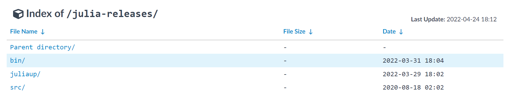
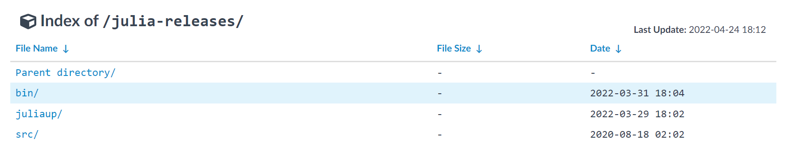
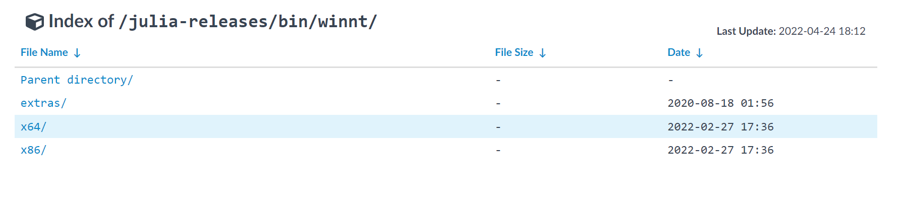
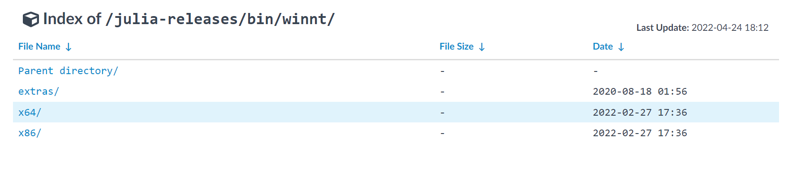
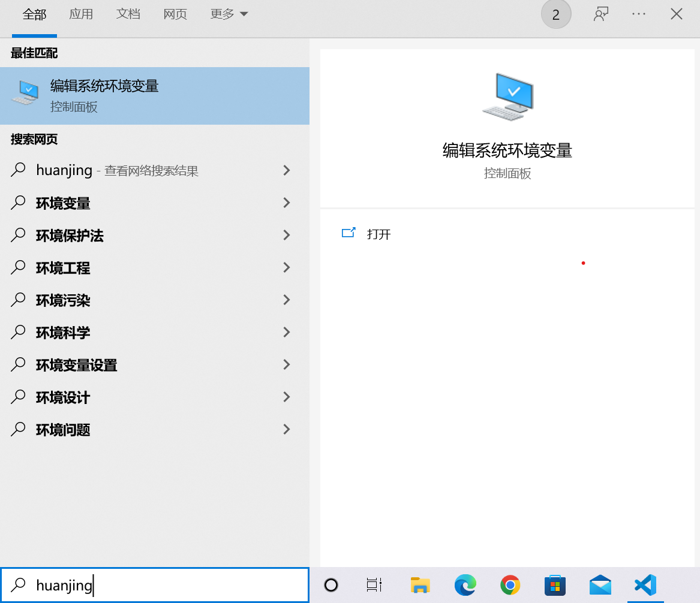
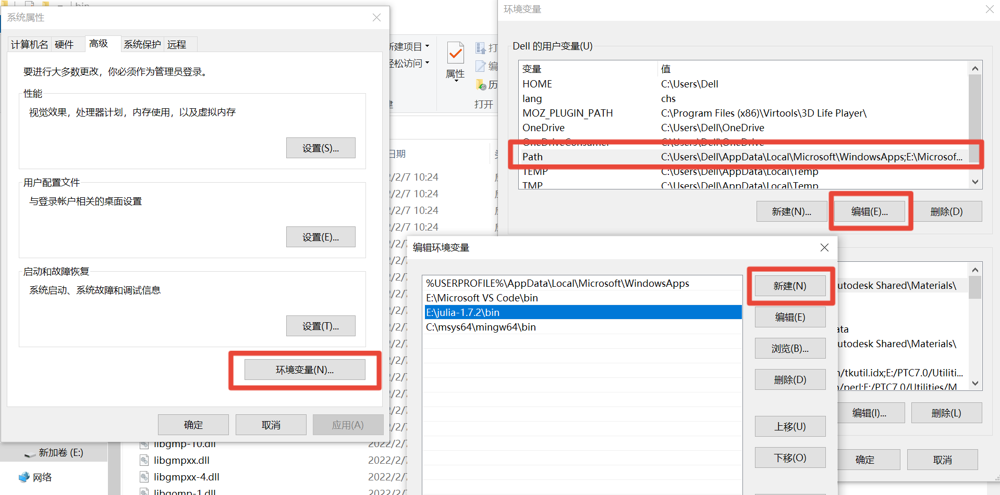
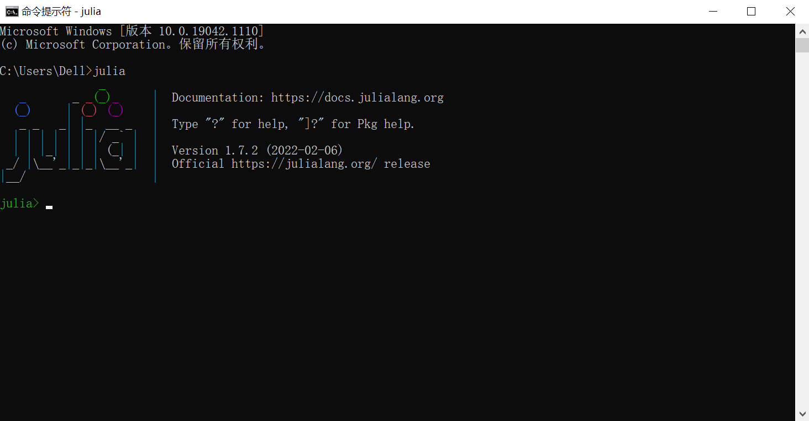

Julia安装
Contents：julia安装
Contributor: 孙蓓蓓、张启
Email:
如有错误，请批评指正。
下载网址
搜索清华大学开源软件镜像站。 
下载julia-xxx-win64.zip安装包
v1.7.2(Feb 6,2022)为julia当前稳定版本。新安装时，下载最新版。
首先，在搜索框中搜索julia，点击julia-releases：  其次，点击bin/：  找到winnt/：
其次，点击bin/：  找到winnt/：  选择x64/：  然后，找到最新版本系列：
选择x64/：  然后，找到最新版本系列：  最后，下拉找到julia-xxx-win64.zip安装包，点击下载。
最后，下拉找到julia-xxx-win64.zip安装包，点击下载。 
解压安装
找到下载好的安装包，右键解压。解压后，生成一个julia-1.7.2文件夹。可执行文件julia.exe就在julia-1.7.2文件夹的bin文件夹下。 
将路径加到环境变量中
在任务栏搜索框中找到“编辑系统环境变量”：  打开环境变量；在用户变量中选择变量Path，点击编辑；新建，将julia.exe文件所在路径复制进去，然后点击确定。 
也可使直接“ + r”打开运行▱，输入
+ r”打开运行▱，输入 rundll32 sysdm.cpl,EditEnvironmentVariables 直接打开环境变量设置界面，注意，此时无法编辑系统环境变量（实际上也并不建议直接编辑系统环境变量），编辑用户环境变量即可。
执行julia
在任务栏搜索框输入cmd，打开命令提示符，输入julia，进入Julie REPL，此时julia就可以执行了。  直接输入exit()，即可退出。
另外，Windows下推荐使用Windows Terminal作为交互终端（直接的Cmd或Powershell终端中，均不支持类似
的用法输入UTF-8字符）。
直接在Microsoft Store上下载Windows Terminal，打开软件后进入设置界面： 
可以直接在界面中运行julia命令，或者将Julia添加到终端中。
左侧导航栏划至最下，新建配置文件，这里这就复制Windows Powershell的（有兴趣可以复制Cmd的试试）。 
在新建的配置文件里面编辑设计即可，详细如图： 
注：终端界面的图标自己找一个，如果懒着找，就接着使用Powershell的也行。